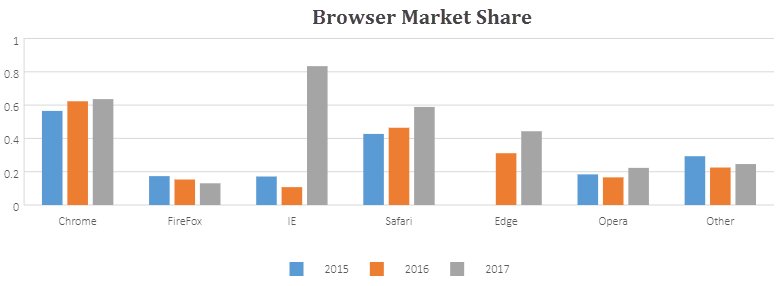

A chart represents the data in graphical format. Hence, it is extensively used in data analytics, especially when users want to make sense out of large chunks of information lying in the spreadsheets.
SpreadJS provides support for the chart functionality just like in Excel. You can insert different types of two-dimensional charts in spreadsheets and customize their elements in order to allow users to visualise data in an efficient way and quickly summarise information for advanced information analysis.
The chart functionality in SpreadJS is provided as a plugin feature which makes it extremely easy for users to create charts and gives them the flexibility to customize it.
With extensive support for eleven chart groups, thirty-three chart types and combo chart ability, you can insert any kind of two-dimensional charts in your spreadsheets, set custom chart layout, customize chart elements as per your preferences and combine multiple chart types in order to evaluate financial information, perform stock analysis, and look over sales revenues in just a few clicks.
The most basic example of a chart is shown below:

For more information on configuring chart elements for custom chart layout, working with different chart types, using animation in charts and customizing chart color with transparency, refer to the following topics: